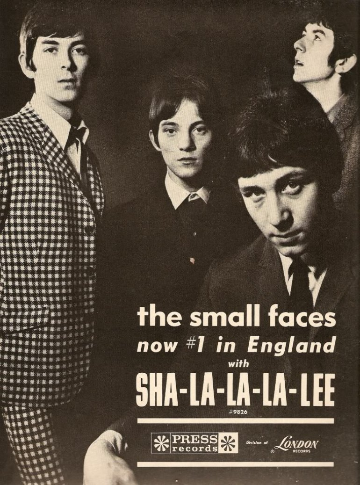

Sha La La La Lee is the 1966 single that made the Small Faces pop stars.
Written to order by Kenny Lynch and Mort Shuman, it reached No. 3 in the UK on March 17, 1966.
The four East London mods never liked it, and it changed their career anyway.

Table of Contents
Why Sha La La La Lee Was Commissioned
A Flop and a Worried Manager
The Small Faces formed in London in 1965 around singer and guitarist Steve Marriott.
Their debut, "Whatcha Gonna Do About It," reached No. 14 in the UK.
The follow-up, "I've Got Mine," failed to chart, and keyboard player Jimmy Winston was soon replaced by Ian McLagan.
Manager Don Arden was determined that his band would not be one-hit wonders.
Hiring the Professionals
Kenny Lynch was a Stepney-born singer with UK hits like "Up on the Roof."
Mort Shuman was the Brooklyn writer behind "Save the Last Dance for Me" and "Viva Las Vegas" with Doc Pomus.
In his autobiography, Arden said he wanted something like Manfred Mann's "Do Wah Diddy Diddy."
He recalled that Lynch supplied the title and chorus, and Shuman finished the tune.
He also admitted the band hated it, and he forced it on them anyway.
Recording the Single
The December 1965 Session
The band cut the track on December 13, 1965, with Lynch producing.
Reissue notes place the session at IBC Studios in London, with engineer John Pantry.
Drummer Kenney Jones later remembered Decca's West Hampstead studio instead, so accounts differ.
It was the first Small Faces single with McLagan on keyboards.
Who Played What
- Steve Marriott: lead vocals, electric guitar
- Ronnie Lane: bass guitar, backing vocals
- Ian McLagan: Hammond organ, Hohner Pianet, backing vocals
- Kenney Jones: drums, percussion, cowbells
- Kenny Lynch: backing vocals
The Falsetto Question
Jones said the band feared the song was too poppy until Marriott sang it.
In his view, Marriott's vocal made it sound less commercial.
Jones also overdubbed a cowbell that, to his ears, sounds like plucked violins.
Some members thought Lynch sang the high chorus parts, but Lane insisted the falsetto was his.
The B-side, "Grow Your Own," was a band-written instrumental built on McLagan's Hammond organ.
It shows the Booker T. & the M.G.'s sound the four of them actually loved.
The Chart Run
Decca issued it in the UK on January 28, 1966.
It entered the Record Retailer chart at No. 30 on February 10.
Five weeks later, on March 17, it reached No. 3 for a single week.
Only the Walker Brothers and the Hollies sat above it that week, according to the Official Charts archive.
It spent 11 weeks on that chart in total and finished 1966 at No. 41 for the year.
| Chart | Peak |
|---|---|
| UK Melody Maker | No. 1 |
| UK Disc Weekly | No. 1 |
| UK New Musical Express | No. 2 |
| UK Record Retailer | No. 3 |
| New Zealand (Listener) | No. 8 |
| West Germany | No. 15 |
| Netherlands (Top 40) | No. 31 |
| Australia (Kent Music Report) | No. 51 |
| US Billboard Hot 100 | Did not chart |
Selling It on Television
The band played Ready Steady Go! on release day, then Thank Your Lucky Stars and Top of the Pops.
In America, London Records issued it, but it missed the Hot 100.
Their first US hit waited for "Itchycoo Park" in 1967.
What the Hit Did to the Band
Teen Idols by Accident
The song gave the Small Faces their first Top 5 hit and a screaming young female audience.
The pin-up image wore on Marriott, who left in 1969 to form the heavier Humble Pie.
The track also appeared on the debut album Small Faces, a UK No. 3 released on May 6, 1966.
Where You Hear It Now
- A Japanese TV advert for the Suzuki Alto Lapin car, in a French pop arrangement
- Episode two of the first season of Netflix's Sex Education in 2019
Where It Fits
The record belongs to 1966, when British beat was getting louder.
Kenney Jones later replaced Keith Moon in our biography of The Who.
In 2012 the Small Faces and the Faces entered the Rock and Roll Hall of Fame together.
Find more of the sound in the British Invasion hub, or tune in to 1966 on Radio Dial.
FAQ
Who wrote the song?
Kenny Lynch and Mort Shuman wrote it.
Manager Don Arden brought them in after the band's second single missed the chart.
When was it released?
Decca released it in the UK on January 28, 1966, with the instrumental Grow Your Own on the B-side.
What chart position did it reach?
It peaked at No. 3 on the Record Retailer chart on March 17, 1966.
Melody Maker and Disc had it at No. 1.
Is it on a Small Faces album?
Yes, the debut album Small Faces, released on May 6, 1966.
A song the band resented became the record that made them famous.
Wikipedia's entry on the single lists its full chart history and sources.
Press play above and hear Sha La La La Lee, cowbell and all.